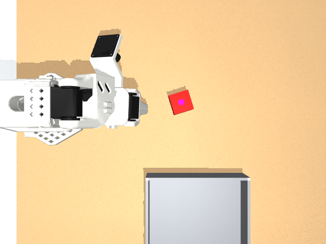
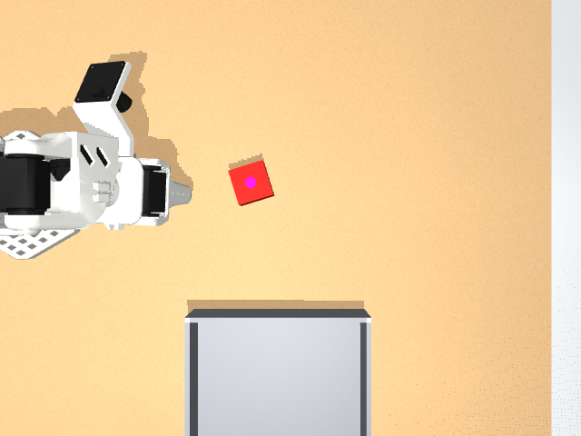
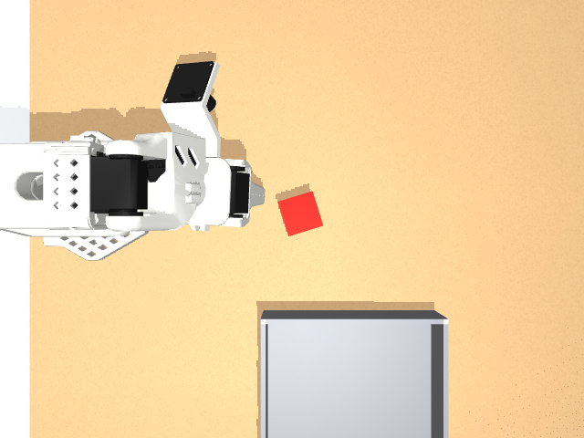
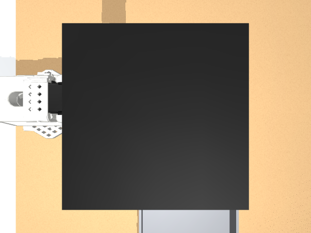
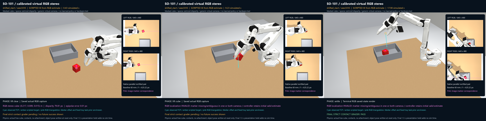

Two calibrated generic virtual cameras measure a colored top-face marker. Four frozen nominal/shifted-start motion trials passed strict contact grading. Two perception-negative trials correctly abstained. This is sparse marked-object stereo plus scripted IK; no new ACT model or physical hardware is demonstrated.
Cyan: observed TCP. Amber: scripted IK reference. Pink: image-derived marker correspondence and triangulated cube center. Captured RGB may lose the marker behind the gripper; the video shows invalid measurements and the controller retains its initial estimate.
All results · Frozen specification · Independent RGB/contact audit · Calibration + negative checks · Video provenance · Method and reproduction
60 mm baseline, f=625.22 px, zero-distortion parallel pinhole views. Five independent probes: ≤1.425 mm 3D error, ≤0.0833 px epipolar residual. This assumes a known colored marker and its top-face offset, rather than dense depth or textureless reconstruction.


| Condition | Seed | RGB initial error | Contact result | Evidence |
|---|
The plain unmarked cube and a physical render-only plate occluding the left camera both reject the marker estimate; no grasp command follows. They are abstentions, not contact successes. Swapped camera order, vertical mismatch and blank-image checks also reject localization.



The original ACT 2/5 evaluation and later 10/12 visual-condition evaluation are unchanged. This experiment uses a scripted initial RGB estimate, a known fixed tray location and fixed cube yaw/grasp-height priors. No training, physical-camera calibration, Orin deployment, ROS or Isaac execution is claimed.